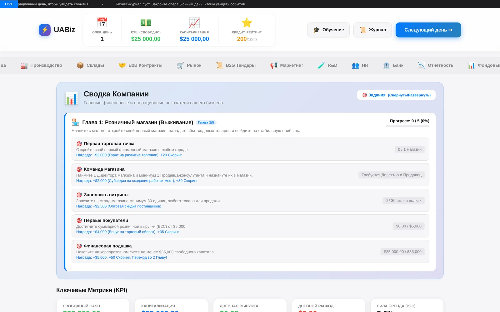
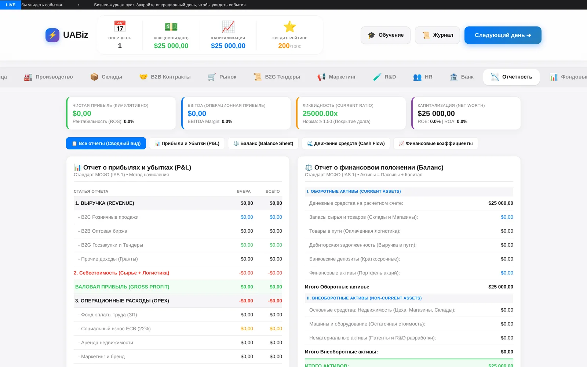
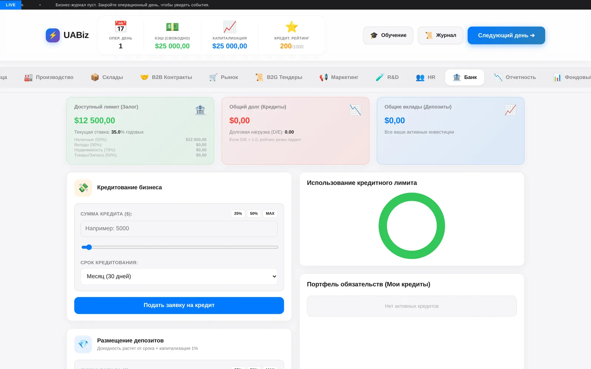
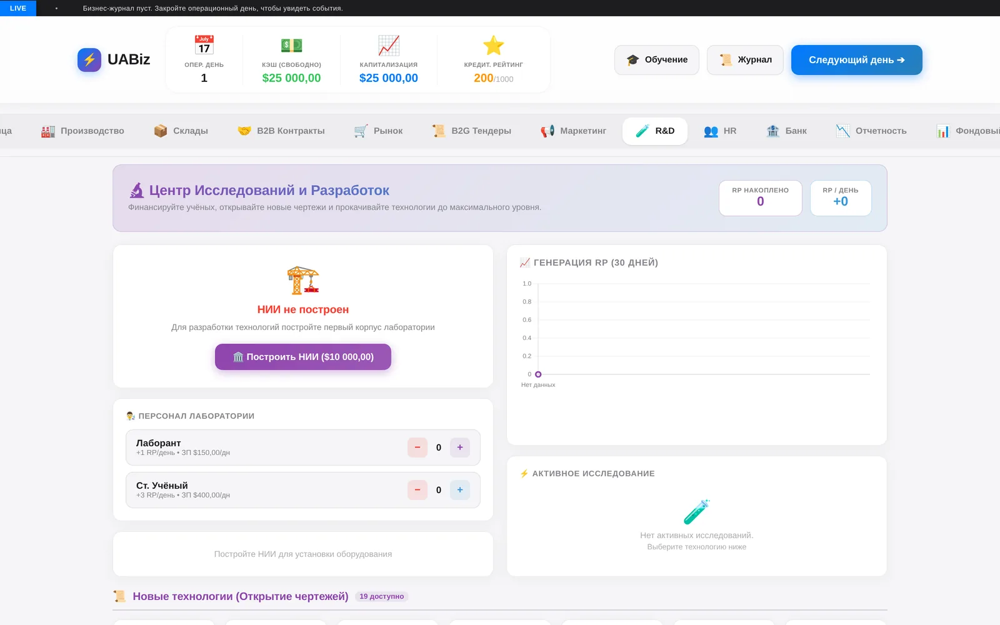
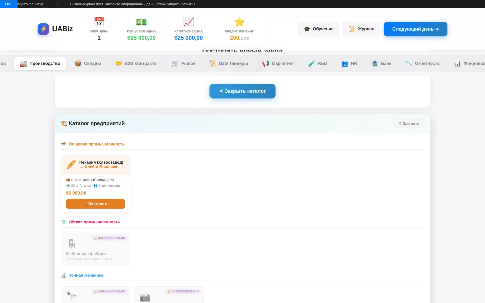

Звітність за МСФЗ
Звіт про прибутки і збитки, баланс (активи = пасиви + капітал), рух грошових коштів і фінансові коефіцієнти: ROS, ROE, ROA, EBITDA margin, current ratio.
Браузерна стратегія управління бізнесом. Старт — $25 000 і один магазин. Фініш — корпорація із заводами, складами, дослідницьким центром і власними акціями на біржі. Усе, що ви робите, потрапляє у фінансову звітність за МСФЗ.
Більшість бізнес-симуляторів зводяться до однієї формули: купив дешевше — продав дорожче. UABiz побудований навколо іншої тези — цікаво не заробляти, а розуміти, звідки взявся прибуток.
Тому в грі немає абстрактного «балансу». Є каса, дебіторка, запаси на складах, товар у дорозі, основні засоби з амортизацією, кредити із заставою та податки. Кожна дія проходить через головну книгу, а вкладка «Звітність» збирає з неї P&L, баланс і рух коштів за стандартом МСФЗ.
Прогрес розбитий на п'ять розділів — від виживання роздрібної точки до національної корпорації. Навчання на 23 кроки проводить нового гравця через усі вкладки, не блокуючи досвідчених.
Звіт про прибутки і збитки, баланс (активи = пасиви + капітал), рух грошових коштів і фінансові коефіцієнти: ROS, ROE, ROA, EBITDA margin, current ratio.
40 ресурсів — від пшениці та бавовни до кремнію, літію й FPV-дронів. Кожен завод має рецепт, станки, робітників за рівнями та власну собівартість.
Довідник міст із власною макроекономікою: податок на прибуток, ЄСВ, ПДВ. Товар між містами їде за гроші й за час — вартість доставки лягає в собівартість.
Кредитний ліміт рахується від застави: готівка 50%, депозити 90%, нерухомість 70%, запаси 50%. Перевищення боргового навантаження D/E > 1.0 обвалює рейтинг.
НДІ виробляє очки досліджень: лаборанти й старші науковці мають різну продуктивність і зарплату. Дослідження відкривають нові креслення заводів і апгрейди.
Оптова біржа з динамічним ціноутворенням, державні тендери, маркетинг із силою бренду й вихід на біржу з власними акціями.
Ядро — один операційний день. Цикл gameLoop послідовно викликає менеджерів, кожен із яких відповідає за свою предметну область і не знає про інтерфейс. Стан гри лежить в одному об'єкті, інтерфейс лише читає його та перемальовує активну вкладку.
index.html усі 13 вкладок інтерфейсу js/core/ gameLoop.js операційний день: порядок виклику менеджерів state.js єдиний об'єкт стану гри utils.js формати грошей, дат, чисел js/data/ recipes.js 40 ресурсів і рецепти виробництва geoData.js міста, податки, макроекономіка js/managers/ ledger.js головна книга: подвійний запис finance.js P&L, баланс, cash flow, коефіцієнти production.js заводи, станки, зміни warehouse.js склади, обсяги, залишки logistics.js маршрути й вартість доставки market.js роздрібний попит і ціни b2bAI.js поведінка оптових контрагентів contracts.js B2B-угоди та B2G-тендери retail.js магазини, вітрини, персонал rnd.js дослідження й дерево технологій stockMarket.js котирування та емісія акцій taxes.js податок на прибуток, ЄСВ, ПДВ hr.js наймання, зарплати, продуктивність events.js випадкові події та кризи quests.js п'ять розділів прогресу js/ui/ dashboardUI.js рендер вкладок і графіків wikiUI.js вбудована база знань tutorial.js навчання на 23 кроки notify.js сповіщення й бізнес-журнал
Натисніть на зображення, щоб відкрити його на весь екран. Стрілки ← → гортають галерею.




